In China Employee Termination: Pulse Route-StressGrid Brief for Foreign Employers (2026 Testing Run)
Key takeaways
- A route-stress grid helps foreign employers test whether a chosen termination route can survive real execution pressure.
- Start with plain legal route fit, then pressure-test against evidence, communication, settlement, and escalation stress factors.
- The highest failure pattern remains route-evidence mismatch under timeline pressure.
- Payroll and IIT logic should be tested as core stress factors, not end-stage administration.
- Stress-grid reviews improve decision quality for non-China leadership.
Pulse lead
In China terminations, teams often ask “which route is legal?” but not “which legal route remains stable when execution stress rises?” That second question is where many disputes begin. A route may be legally arguable, yet operationally fragile once manager variance, document gaps, or payout uncertainty appears.
This run uses a route-stress grid format to compare routes against execution stress factors before action.
Plain-language legal/regulatory context first
China’s Labor Contract Law defines route boundaries. Implementation regulations and SPC judicial interpretation shape real dispute review around fairness, process consistency, and documentary reliability. For foreign employers, the practical rule is simple: legal route choice must remain coherent through evidence, communication, and settlement closure.
Route-StressGrid
Route 1: Mutual/negotiated separation
Stress resilience: generally higher under medium evidence uncertainty.
- Evidence stress: medium tolerance if negotiation records are clean.
- Communication stress: moderate; narrative consistency still required.
- Settlement stress: high sensitivity to payout/tax clarity.
- Escalation stress: manageable if fallback protocol is pre-defined.
Route 2: Unilateral statutory termination
Stress resilience: high only when evidence integrity is high.
- Evidence stress: low tolerance for chronology gaps.
- Communication stress: low tolerance for manager improvisation.
- Settlement stress: still material; errors can multiply claims.
- Escalation stress: high; legal oversight needed early.
Route 3: Restructuring-linked pathway
Stress resilience: variable; often lower under cross-city complexity.
- Evidence stress: high documentation burden.
- Communication stress: high due to multi-stakeholder messaging.
- Settlement stress: high with funding/tax consistency demands.
- Escalation stress: high; city-sensitive legal calibration needed.
Practical implications for foreign employers
- Stress-testing route choice prevents false confidence.
- HQ/local alignment improves when route decisions include stress scores.
- Leadership can invest resources where stress risk is highest.
- City-level differences can be modeled as stress multipliers.
For multinational teams, this model reduces late reversals: cases are rerouted earlier when stress tolerance is clearly below threshold. It also improves board-level communication because delay requests can be tied to specific stress cells and remediation plans rather than general caution.
Cross-border operating notes
- Time-zone pressure: define delegated approvers so local teams are not forced into premature action.
- Translation control: assign one controlling legal-language draft and one approved operational translation.
- Vendor context gaps: provide route rationale and exception flags to payroll vendors, not just payout values.
- Manager narrative drift: require a short alignment checkpoint before employee-facing meetings.
Daily operations SOP
- Select candidate route and assign baseline legal fit score.
- Score route against four stress factors.
- Assign remediation owners for any red/amber stress cells.
- Lock settlement and communication controls before execution.
- Re-score after material new facts.
- Execute with stress-grid logs and close with audit.
Required document checklist
- Route memo + legal signoff
- Stress-grid score sheet
- Evidence index + chronology verification
- Communication package + language control
- Settlement worksheet + IIT method + version lock
- Escalation/override log
- Service/payment records
- Final closure audit
Exception handling playbook
- Stress cell turns red pre-execution: hold and remediate.
- Route no longer stress-feasible: reroute or escalate.
- Settlement stress increases late: pause outward steps.
- Override requested on unresolved red cell: written risk acceptance required.
System implementation notes
Add stress-grid fields to workflow:
- route id + legal-fit score
- stress factor scores
- owner + closure SLA
- settlement lock + IIT fields
- override trail
- final stress outcome score
Minimum data model
- Case metadata (entity, city, route type)
- Stress cell log (score, reason, changed-by)
- Action closure log (owner, due date, proof)
- Override log (approver, rationale, validity)
- Closure log (final score, unresolved items)
Decision thresholds (recommended baseline)
- Green: route stress within tolerance; proceed with normal controls.
- Amber: route remains feasible but requires named remediation before execution.
- Red: route not execution-feasible without reroute or formal risk acceptance.
For foreign operators, the threshold definitions should be approved centrally but calibrated locally with counsel, especially where city-level practice differs.
Common mistakes and prevention
- Mistake: route selection without stress test.
Prevention: mandatory stress-grid before route lock.
- Mistake: underestimating settlement stress.
Prevention: non-waivable settlement lock.
- Mistake: static stress scores after new facts.
Prevention: automatic re-score trigger.
What to do now
- Pilot stress-grid scoring on three active cases.
- Define red/amber/green thresholds by route.
- Add city-level stress multipliers.
- Train managers on communication stress controls.
- Track unresolved red-cell age.
- Review weekly stress dashboards.
- Map disputes to prior stress scores.
- Update SOP and templates.
- Report monthly stress trends to leadership.
- Recalibrate each hourly quality loop.
StressGrid KPI dashboard
Track: red-cell count by route, closure time for red cells, override rate on unresolved red cells, and post-action incidents linked to high-stress cells. Add prevention KPI: reroute rate after first stress scan.
For leadership, split reporting into:
- Weekly execution view: open red cells, overdue owners, unresolved settlement stress.
- Monthly governance view: repeat stress triggers, city-level variance patterns, and override quality trends.
Rollout recommendation
- Week 1-2: pilot stress-grid scoring on medium-risk cases and calibrate route thresholds.
- Week 3-4: include high-risk cases and make settlement stress controls non-waivable.
- Month 2+: integrate stress-grid outputs into leadership reviews and local counsel calibration.
Phased rollout improves adoption quality and prevents noisy scoring during early use.
What to watch next
- Continued route-process coherence scrutiny.
- Persistent settlement and IIT transparency sensitivity.
- City-level variance in dispute handling practice.
FAQ
Is stress-grid scoring legally required?
No. It is an execution-governance framework.
Can small teams use this?
Yes, with simplified scoring and ownership rules.
When should external PRC counsel be mandatory?
High-risk unilateral, restructuring, refusal, protected-status, and multi-city complex cases.
Legal depth appendix
Anchors: PRC Labor Contract Law, State Council implementation regulations, SPC labor-dispute interpretation. Practical rule: route legality, procedural fairness, and documentary reliability must align through settlement completion.
Disclaimer
Informational only, not legal advice. Seek qualified PRC counsel for case-specific actions.
Sources
- NPC Labor Contract Law (English): http://www.npc.gov.cn/zgrdw/englishnpc/Law/2007-12/13/content_1384064.htm
- State Council Implementation Regulations: https://www.gov.cn/gongbao/content/2008/content_1124615.htm
- SPC labor dispute interpretation: https://www.court.gov.cn/fabu/xiangqing/243981.html
- China Briefing termination guide: https://www.china-briefing.com/news/employee-termination-in-china/
- Littler employment-law update: https://www.littler.com/news-analysis/asap/key-recent-developments-chinas-employment-law-china-us-comparative-perspective
- PwC PRC IIT summary: https://taxsummaries.pwc.com/peoples-republic-of-china/individual/taxes-on-personal-income
Need local employment support in China?
If you need a compliance-first partner for hiring, payroll, and risk controls in China, China-Payroll.com can help evaluate the right setup.
Image Prompt Pack
Create a 16:9 hero image for article title: 'In China Employee Termination: Pulse Route-StressGrid Brief for Foreign Employers (2026 Testing Run)'. Scene: global operations team evaluating workforce model options for China market entry. Include motifs: decisio…